Section: Wood Workshop Practice · Code WW 301
Woodwork Practice: Bridle, Mortise and Tenon Joints
Two framing joints, cut entirely by hand from 300 × 60 × 42 mm stock. The exercise looks simple until you attempt it: every one of the six tool families in the carpentry shop is needed, the whole job depends on marking out that is accurate to under a millimetre, and the thing that ultimately decides whether the joint is tight is which side of the line you cut on.
1 Aims
The aim of this practical is to produce, entirely by hand, two of the framing joints on which most timber construction depends — the bridle joint and the mortise and tenon joint — and in doing so to acquire the underlying skills of the carpentry shop: reading the timber, marking out accurately, sawing to a line, paring to a gauge mark, and fitting two components together so that they hold without fastenings.
A further aim is to understand why these joints are shaped the way they are. Both are resisting the same thing — the tendency of a frame to rack, that is, to collapse into a parallelogram — and both do it by converting what would be a weak end-grain butt into a large area of long-grain-to-long-grain contact restrained mechanically. Understanding that makes the difference between copying a drawing and knowing which joint to specify.
2 Objectives
- To know the materials used in the woodwork shop.
- To familiarise with the tools used in the woodwork shop.
- To know how to produce a bridle joint.
- To know how to produce a mortise and tenon joint.
Working objectives added for the session:
- To distinguish hardwood from softwood by inspection of the annual rings and medullary rays, and to state why hardwood is used for joinery.
- To set and use a mortise gauge correctly, working from a single face side and face edge.
- To divide the thickness of a member into three equal parts and cut to the correct side of the gauge line.
3 Apparatus
Materials: two pieces of Afara (a West African hardwood), each 300 × 60 × 42 mm, for each joint. Auxiliary materials available: nails, screws, adhesives, paints and varnishes.
Tools required (combining the lists given for EPX 1 and EPX 2):
- PencilPreliminary marking out; lines that must not be cut to.
- Measuring tape / steel ruleSteel rule 30 cm and 60 cm; flexible rule for larger and curved dimensions.
- Try squareRectangular steel blade, 150–300 mm, rigidly fixed to a cast-iron stock; squares lines across the face.
- Mortise gaugeTwo marking pins, one adjustable, to scribe both cheeks of the mortise in one pass.
- Marking gaugeSingle steel point on a stem sliding in a stock, locked by a thumb screw.
- Marking knife / scriberConverts pencil lines into deep scratch lines; severs the fibres at the shoulder.
- Bevel squareAdjustable try square (sliding level) for marking angles between 0° and 180°.
- Tenon saw (back saw)Parallel blade 25–40 cm, 6–10 cm wide, 5–8 teeth per cm, stiffened back for straight cuts.
- Mortise chisel ½″ / 12 mmHeavy, deep cuts to remove large quantities of wood; blade 6–15 mm thick.
- Paring / firmer chisel ½″Firmer chisel, flat blade 15–50 mm wide, 125 mm long; general-purpose paring.
- Bevelled-edge (dovetail) chiselFor fine and delicate work and for cutting into corners.
- MalletWooden-headed hammer of round or rectangular section; drives chisels without damaging the handle.
- Rasp (wood rasp file)Finishing tool; smooths the surface, removes sharp edges, finishes fillets and interior surfaces.
- Jack planeWooden or iron; trues and smooths the faces before marking out.
- Tee cramp / bar crampSteel bar, threaded spindle and adjustable shoe; holds the assembled joint.
- Work bench with bench hook and viceHardwood bench 50–80 cm long, about 90 cm wide, for two to four carpenters.
4 Theory and Diagrams
4.1 Woodworking and the material
Woodworking is the process of shaping timber using hand tools. The products are used in building construction — doors and windows — in furniture manufacture, and for patterns for moulding in foundries, which is the direct link between this section and the foundry section later in the manual. Carpentry work mainly involves joining wooden pieces together and finishing the surfaces after shaping them; the term joinery is used for the joining. A student studying the fundamentals of woodworking therefore has to know about timber and other carpentry materials, woodworking tools, carpentry operations, and the method of making the common types of joints.
The basic materials used in the carpentry shop are timber and plywood, with nails, screws, adhesives, paints and varnishes as auxiliaries. Timber is the name given to wood obtained from exogenous — outward growing — trees. In these trees the growth is outward from the centre, adding almost concentric layers of fresh wood every year, and these layers are the annual rings. After full growth the trees are cut and sawn to convert them into rectangular sections of various sizes for engineering purposes.
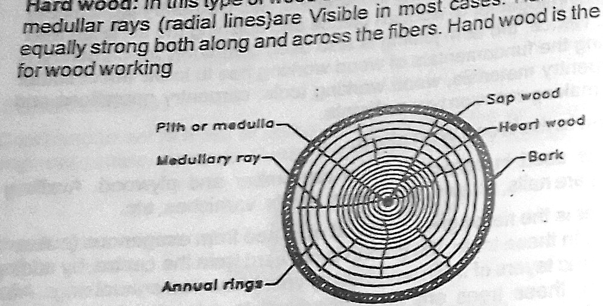
Commercial forms of timber
Timber reaches the market in a set of standard forms, distinguished by how far conversion has proceeded:
- Log — the trunk of the tree, free from branches.
- Balk — the log after sawing roughly to a square cross-section.
- Deal — the log after sawing into rectangular cross-section, width about 225 mm and thickness up to 100 mm.
- Plank — timber of width more than 275 mm and thickness 50 to 150 mm.
- Board — below 50 mm in thickness and above 125 mm in width.
- Batten — below 175 mm in width and between 30 and 50 mm in thickness.
- Scantlings — assorted and non-standard sizes other than the above.
Classification of wood
Timber used for commercial purposes divides into two classes. Softwood is light in weight and light in colour. The medullary rays — the radial lines — are not visible, and the distinct annual rings but the colour of the sapwood, the outer layers, is not distinctive from that of the heartwood inside. These woods cannot resist stresses developed across their fibres and are consequently not suitable for wood working of the structural kind. Hardwood has annual rings that are compact and thin, and the medullary rays are visible in most cases. Hardwood is nearly equally strong both along and across the fibres, and it is the material used for woodworking.
That last property is the one that matters for joint-making. A joint loads the timber in several directions at once: a tenon shoulder bears across the grain, the cheeks of a bridle are loaded in shear along the grain, and the walls of a mortise are being pushed apart sideways. A material that is strong along the fibres but weak across them will simply split out at the first of those loadings, which is why the exercise specifies Afara rather than a softwood.
4.2 Tools for woodworking
The principal hand tools used in a carpentry workshop are classified into six families: marking and measuring tools, cutting tools, planing tools, boring tools, striking tools, and holding tools. All six were used in this practical.
(i) Marking and measuring tools
Rules are used for measuring dimensions and for setting out. Stainless steel rules of 30 cm and 60 cm are standard, together with a flexible measuring rule for large dimensions and for curved or angular surfaces. A straight edge is a machined flat piece of wood or metal with perfectly straight and parallel edges. A steel tape is used for large dimensions such as marking on boards and checking the overall dimensions of the work.
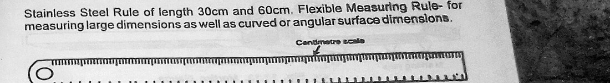
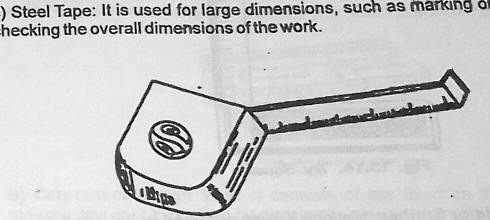
Gauges are used to mark lines parallel to the edges of a wooden piece. A gauge consists mainly of a wooden stem sliding inside a wooden stock; the stem carries a steel point for marking lines, and the stock position on the stem can be varied and fixed rigidly by tightening the thumb screw. To mark a line parallel to an edge, the gauge stock is held firmly against the edge and pushed along it, pressing the steel point into the surface. The mortise gauge is the same tool with two marking pins, one of which is adjustable, so that both cheeks of a mortise are scribed in a single pass and are therefore guaranteed parallel.
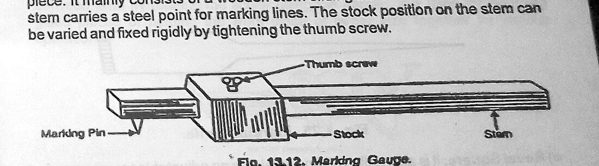
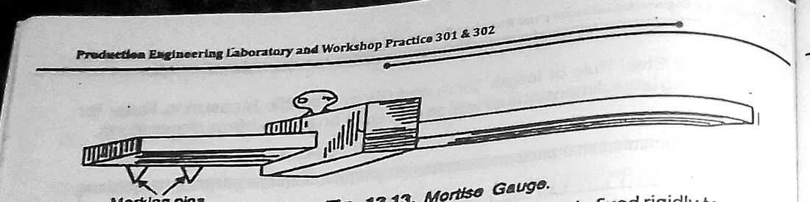
The try square consists of a rectangular steel blade fixed rigidly to a cast-iron stock, the blade varying in length from 150 mm to 300 mm; it is used for squaring lines across a face and for testing that an edge is square to a face. The marking knife or scriber is made of steel with a sharp point at one end and a flat blade at the other, and is used to convert pencil lines on the wooden surface into deep scratch lines. The bevel square, also called a sliding level, is an adjustable try square used for measuring and marking angles between 0° and 180°.
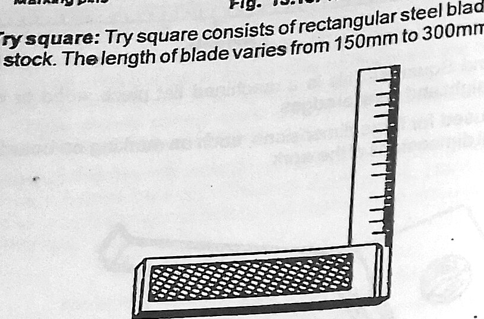
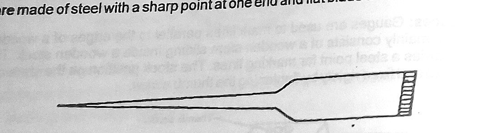
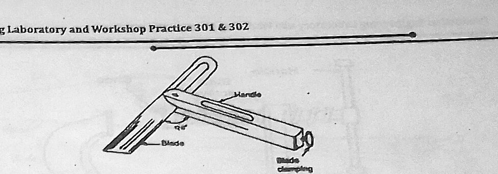
A pencil line has width, and the width is roughly half a millimetre. Two pieces marked to the same pencil line and cut to opposite edges of it differ by that amount, which is the difference between a tight joint and a sloppy one. A knife line has effectively no width, and it does something a pencil cannot: it severs the surface fibres, so that the chisel or saw entering the cut cannot tear out beyond the line. On both joints in this exercise the shoulder lines were knifed, not pencilled.
(ii) Holding tools
The work bench is a table of varying size and raised construction made of hardwood, from 50 to 80 cm in length and about 90 cm in width, at which two or four carpenters can work at a time. The carpenter's bench vice consists of a jaw fixed on the table side and a movable jaw kept in position by a screw and handle; the body is cast iron or steel, and the jaws are lined with hardwood which can be removed when damaged. The screw moves inside a fixed half nut and can be engaged or disengaged by operating a lever, giving a rapid open-and-close action. The C or G clamp is used to clamp short pieces together, available in sizes from 70 mm to 800 mm, and is used for holding planks after gluing. The bar or T-cramp consists of a steel bar fitted with a threaded spindle and an adjustable shoe, and is used for holding glued pieces tightly, or for holding two or more unglued pieces firmly for fitting dowels or doing other operations on them in the assembled position.
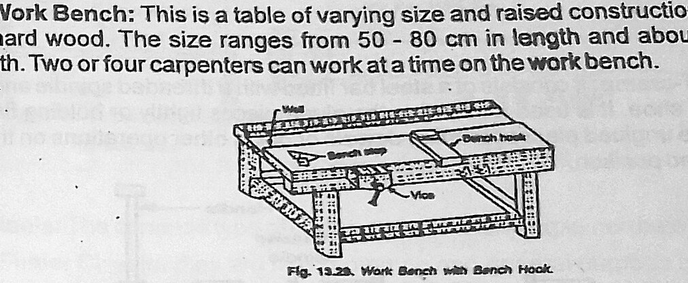
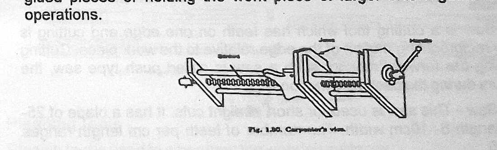
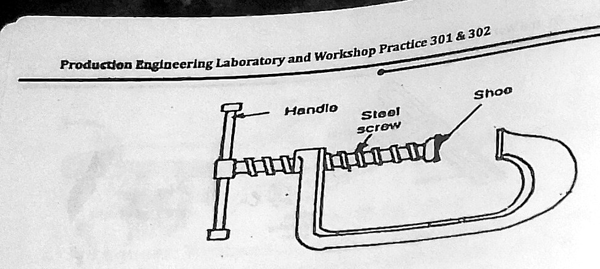
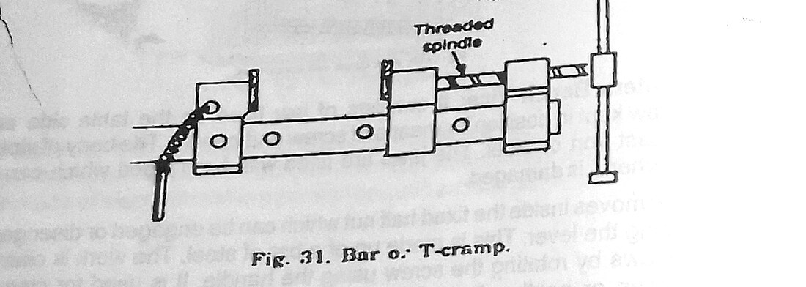
(iii) Cutting tools
A saw is a cutting tool which has teeth on one edge, cutting being effected by reciprocating motion of the edge relative to the work piece. Where cutting occurs during the forward motion the saw is called a push-type saw; in others the cutting occurs during the backward motion. The hand saw is used for short straight cuts, with a blade of 25–40 cm length and 6–10 cm width and 3–5 teeth per cm. The tenon saw or back saw has a parallel blade of 25–40 cm length and 6–10 cm width with 5–8 teeth per cm; the finer pitch and the stiffening rib along the back are what make it the correct saw for joint work.
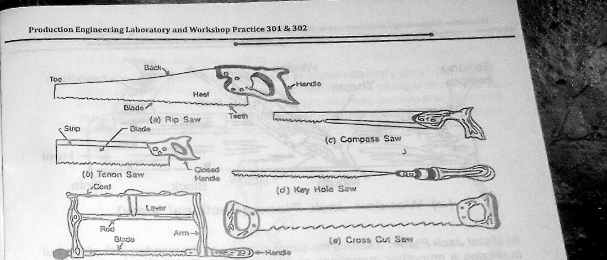
Chisels come in several types. Firmer chisels are the most common and general-purpose chisel used by a carpenter, with flat blades of 15–50 mm width and 125 mm length. Dovetail chisels, the bevelled-edge firmer chisels, are used for fine and delicate work as well as for cutting corners — the bevel along the edge is what lets them reach into an acute internal corner that a square-edged chisel would foul. Mortise chisels are used for heavy and deep cuts to remove large quantities of wood; they are about 15 mm wide, but the blade thickness may range from 6 to 15 mm, and that thickness is deliberate, since the chisel is levered in the mortise to break out waste and a thin blade would snap.
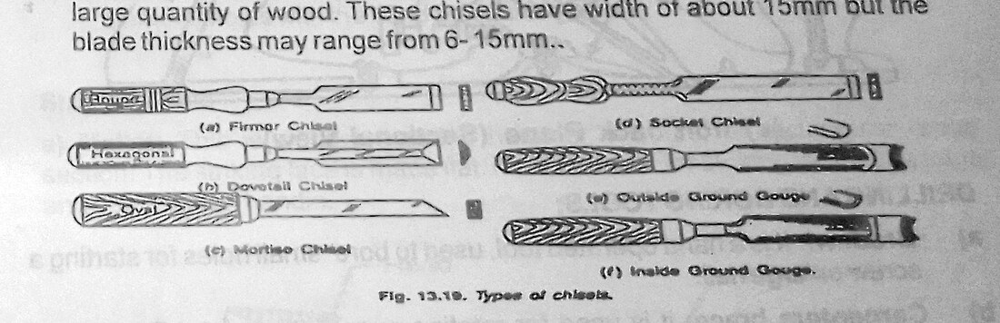
(iv) Planing tools
A planing tool is used to smoothen wooden surfaces. The wooden jack plane is the most commonly used plane in the carpentry shop. Its main part is a wooden block called the sole, in which a steel blade having a knife edge is fixed at an angle with the help of a wooden wedge; the angle of the blade is kept at about 45° to the bottom surface. The metal jack plane serves the same purpose but facilitates smoother operation and better finish; the body is made from a grey iron casting with the side and sole machined and ground to a better finish.
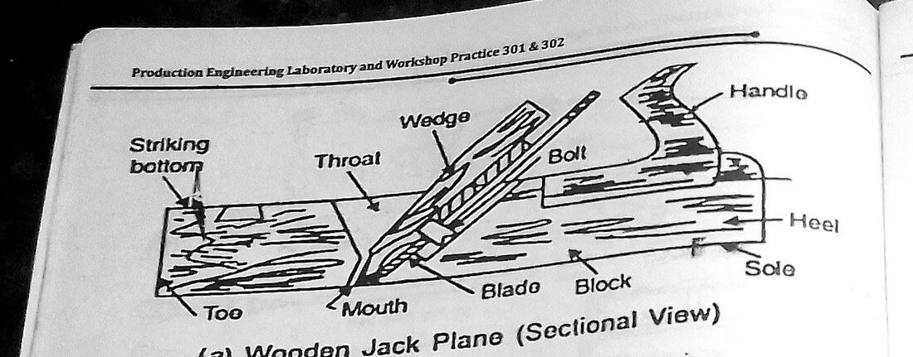
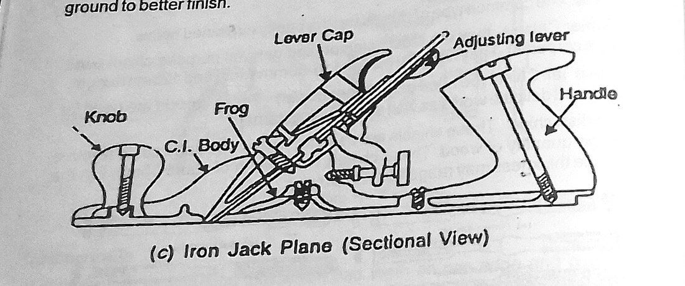
(v) Drilling and boring tools
The bradawl is a hand-operated tool used to bore small holes for starting a screw or large nail. The carpenter's brace rotates auger bits and twist drills to produce holes in wood, and some designs incorporate a ratchet device for working in confined spaces. The auger bit is the most common tool for making holes in wood; during drilling the lead screw of the bit pulls itself into the wood, so only moderate pressure is needed on the brace, and the helical flutes carry the chips to the outer surface. The hand drill is used for small holes: it is small and light, takes a straight-shank drill clamped in a chuck, and is rotated by a handle acting through a gear-and-pinion arrangement. The gimlet has cutting edges like a twist drill and is used for drilling large-diameter holes with hand pressure.
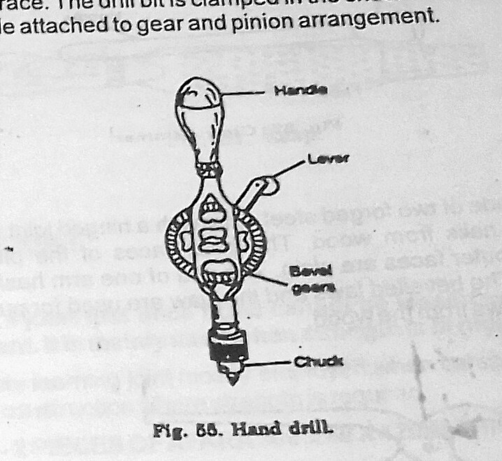
(vi) Striking tools
The mallet is a wooden-headed hammer of round or rectangular cross-section with a flat striking face and a wooden handle, used for striking cutting tools. The claw hammer has a steel head and wooden handle; the flat face drives nails and the claw extracts them from the wood. The pincer is made of two forged steel arms with a hinged joint and is used for pulling small nails from wood — the inner faces of the jaws are bevelled and the outer faces plain, one arm ending in a ball and the other in a claw. The screwdriver drives wood screws into wood or unscrews them; its length is determined by the length of the blade, and as the blade length increases the width and thickness of the tip also increase. The wood rasp file is a finishing tool used to make the wood surface smooth, remove sharp edges and finish fillets and other interior surfaces; sharp cutting teeth are provided on its surface and it is used exclusively in wood work.
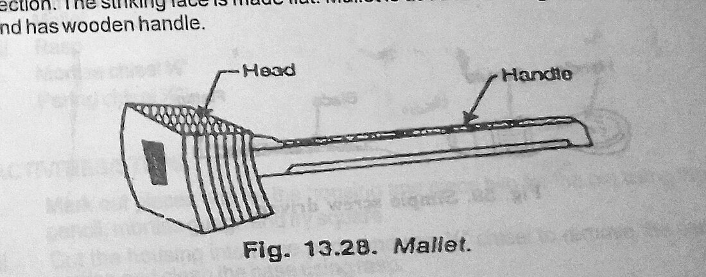
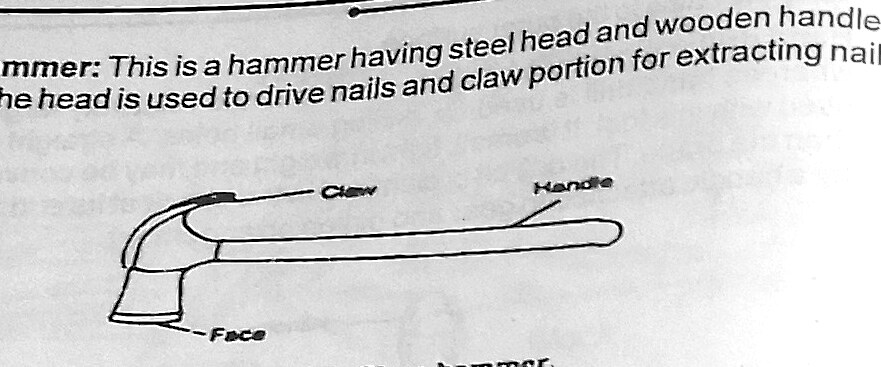
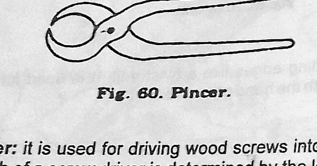
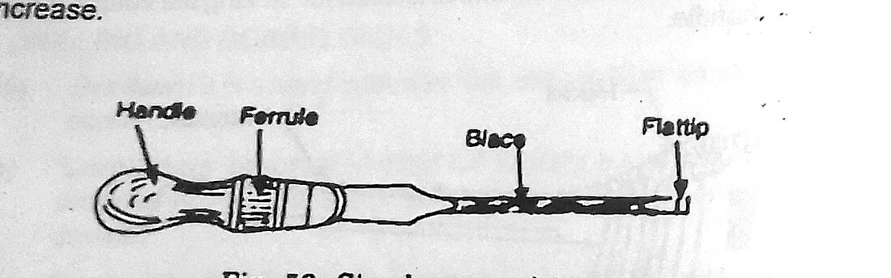
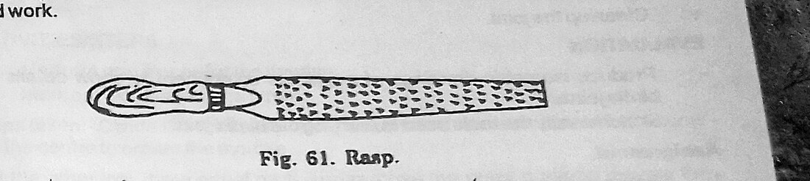
A chisel is struck with a mallet, never with a steel hammer. A steel face concentrates the blow on a small area of the wooden chisel handle and splits the ferrule end after a few strikes; the broad, soft wooden face of the mallet spreads it. This is the woodwork instance of general shop safety rule 18 — a hard hammer should not be used to strike a hardened tool; use a soft-faced hammer.
4.3 EPX 1 — The bridle joint
A bridle joint is a joint which, once fitted, cannot be loosened easily because of the arrangement. It is mainly used where strength is in high demand. Structurally it is the inverse of a mortise and tenon: instead of a closed socket receiving a tongue, the housing member has its centre third removed to form an open, three-sided slot, and the pin member has its two outer thirds removed to leave a central tongue that sits into that slot. The result is two glue lines of long grain against long grain, plus mechanical restraint against racking in the plane of the frame. Because the slot is open on one side it can be cut entirely with a saw and chisel from the end, which makes it considerably quicker to produce than a mortise, and it is the joint most commonly employed when carcassing a roof structure, as well as being useful for construction where strength is required.
4.4 EPX 2 — The mortise and tenon joint
This is a joint for general purpose when it comes to angle joints. It is used for all types of construction, and it may be produced as a through mortise, a stopped mortise, or an open mortise. The mortise is the rectangular socket; the tenon is the projecting tongue that enters it. In the through form the tenon passes right through the mortised member and shows on the far face; in the stopped or blind form it does not, which is neater but gives a smaller glue area; the open form is essentially the bridle.
Its uses and applications, as given in the manual, are: fixing such as tables; frames, chair rails to arms and legs; doors and windows construction, where it is most commonly found; and the construction of containers.
The proportioning rule used for both joints is the rule of thirds: the thickness of the material is divided into three equal parts, and the tenon (or bridle tongue) takes the middle third while the two shoulders take the outer thirds. On the 42 mm stock used here, that gives a tenon 14 mm thick with two 14 mm shoulders. The rule is not arbitrary. If the tenon is made thicker the mortise walls become thin and split out under the wedging action of the tenon; if it is made thinner the tenon itself shears. One third is close to the optimum for both failure modes at once.
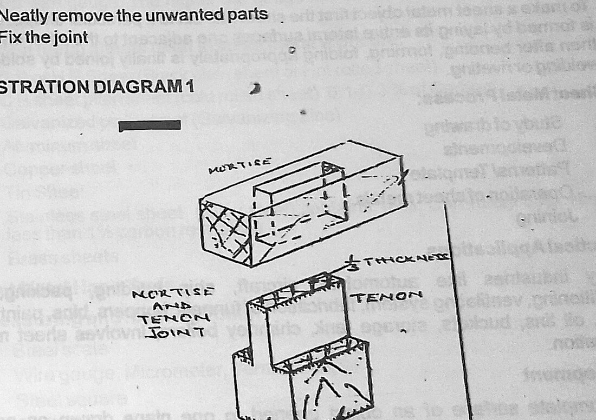
5 Table of Values
The values below are the material and tool specifications stated in the manual, together with the joint proportions derived from the rule of thirds applied to the issued 42 mm stock.
| Form | Description | Width | Thickness |
|---|---|---|---|
| Log | Trunk of the tree, free from branches | — | — |
| Balk | Log sawn roughly to square cross-section | — | — |
| Deal | Log sawn to rectangular cross-section | about 225 mm | up to 100 mm |
| Plank | Wide converted section | more than 275 mm | 50 – 150 mm |
| Board | Thin converted section | above 125 mm | below 50 mm |
| Batten | Narrow converted section | below 175 mm | 30 – 50 mm |
| Scantling | Assorted and non-standard sizes | other than the above | |
| Tool | Dimension / specification |
|---|---|
| Steel rule | 30 cm and 60 cm |
| Try square blade | 150 mm to 300 mm |
| Bevel square range | 0° to 180° |
| Hand saw | Blade 25–40 cm long, 6–10 cm wide, 3–5 teeth per cm |
| Tenon (back) saw | Blade 25–40 cm long, 6–10 cm wide, 5–8 teeth per cm |
| Firmer chisel | Blade 15–50 mm wide, 125 mm long |
| Mortise chisel | About 15 mm wide, blade thickness 6–15 mm |
| Jack plane blade angle | About 45° to the bottom surface |
| C or G clamp | 70 mm to 800 mm |
| Work bench | 50–80 cm length, about 90 cm width; 2–4 carpenters |
| Parameter | Value | Derivation |
|---|---|---|
| Stock length | 300 mm | As issued |
| Stock width | 60 mm | As issued |
| Stock thickness | 42 mm | As issued |
| Tenon / bridle tongue thickness | 14 mm | 42 ÷ 3 |
| Shoulder thickness, each side | 14 mm | 42 ÷ 3 |
| Mortise width | 14 mm | Equal to tenon thickness; suits the 12 mm mortise chisel with a light pare |
| Mortise / tongue depth (through joint) | 60 mm | Full width of the mortised member |
| Mortise length | 60 mm | Equal to the width of the tenoned member |
6 Procedure
Preparation common to both joints
- The two pieces of Afara were examined for defects, and the straightest, cleanest face of each was chosen as the face side. It was planed true with the jack plane and marked with a face-side mark.
- One edge adjacent to it was planed square to the face side, tested with the try square by sighting for light, and marked as the face edge. All subsequent gauging was referenced from these two surfaces only.
- The pieces were cut to the 300 mm length and the ends squared.
EPX 1 — Bridle joint
- Marking out. One piece was marked out for the housing and the second for the pin, using the tape, pencil, mortise gauge and try square. The shoulder lines were squared right round both members with the try square and then knifed.
- Cutting the housing. The thickness was divided into three parts. The housing was cut along the two gauge lines with the tenon saw, keeping the kerf on the waste side of the line, and the ½″ chisel was used to remove the centre portion. The base of the slot was cleaned with the rasp.
- Cutting the pin. The pin member was likewise divided into three. The two outer portions were chiselled out, leaving the middle, using chisel and mallet, and the resulting tongue was cleaned up.
- Fitting. The joint was offered up dry. Where it refused to enter, the high spots were identified by the burnishing they left on the mating face and pared back a shaving at a time until the joint closed.
- Cleaning up. The assembled joint was cleaned up with the rasp and a fine chisel, and the arrises lightly relieved.
EPX 2 — Mortise and tenon joint
- Marking out. One piece was marked out for the mortise and the other for the tenon. The mortise gauge was set to straddle the middle third of the 42 mm thickness — that is, pins set 14 mm apart with the stock adjusted so that the pins sit 14 mm from the face side — and both members were gauged from the face side, so that any error in the setting cancels between the two parts.
- Cutting the mortise. The thickness of the wood was divided into three equal parts and the centre was scooped out to create the mortise. The 12 mm mortise chisel was driven in with the mallet, starting from the middle of the mortise and working towards each end, taking successive bites and levering the waste out, then reversing and working from the other face to meet in the middle so that no break-out occurred on either surface.
- Cutting the tenon. The other member was divided into three equal parts and the outer portions were removed, leaving the centre to form the tenon. The cheeks were sawn down to the shoulder line with the tenon saw, working on the waste side of the gauge line, and the shoulders were then cut across with the saw against a bench hook.
- Trimming. The unwanted parts were neatly removed and the tenon cheeks and shoulders pared flat with the paring chisel.
- Fitting. The joint was fitted. A tenon that entered under light hand pressure and required a mallet tap to seat fully was accepted; anything that had to be forced was pared back.
- The finished joint was cleaned up with the rasp, and the T-cramp was used to hold the assembly while it was checked for square with the try square.
7 Precautions
- Safety glasses and full-cover footwear were worn throughout, and sleeves were kept clear of the work.
- The workpiece was always secured in the bench vice or against the bench hook before cutting. Nothing was held by hand while being sawn or chiselled.
- Both hands were kept behind the cutting edge of the chisel, and the chisel was always pushed away from the body, never towards it.
- Chisels were struck with a mallet only, never with a steel hammer.
- Chisels were kept sharp. A blunt chisel needs more force, and it is the extra force that makes the tool skid off the line and into the hand.
- Chisels were laid on the bench with the cutting edge away from the working position, and were never left protruding over the bench edge.
- The saw was started with the thumb knuckle as a guide and short backward strokes, and the thumb was withdrawn once the kerf was established.
- Cuts were always made on the waste side of the gauge line — the line itself was left standing, so that the joint could be pared to fit rather than found to be undersize.
- All gauging was done from the face side and face edge only, so that errors did not accumulate.
- Waste and shavings were cleared from the bench and the floor as work proceeded, and the bench was left clear at the end of the session.
- The dry fit was tested with hand pressure, not by driving the joint together, since a joint forced together with a mallet before it is ready splits the mortise walls.
8 Discussion
Both joints were completed, but the mortise and tenon was noticeably the harder of the two, and the reason is instructive. The bridle joint is cut entirely from the end of the member: every surface the saw or chisel has to produce is open to view, so you can see the line you are working to throughout, and any error in the slot can be pared out in full daylight. The mortise is a blind, four-sided hole, and once the chisel is below the surface you are working on feel. The characteristic fault follows from that: a mortise slightly bell-mouthed at the entry and slightly out of square across the width, which betrays itself when the tenon enters easily for the first 10 mm and then jams.
The technique that solved it was the one described in the procedure: working from the middle of the mortise outward and then turning the piece over and meeting from the other face. Chopping straight through from one side drives the waste ahead of the chisel and blows the fibres out of the far surface; meeting in the middle leaves both faces crisp. It is a technique whose point is easy to miss until a first attempt has blown the fibres out of the far face.
The second lesson is about the rule of thirds, which is easily dismissed as a mere convention. On the 42 mm stock it gives a 14 mm tenon and 14 mm mortise walls. Setting the gauge to give a thicker tenon, on the reasoning that a thicker tenon must be a stronger one, splits a mortise wall out when the joint is driven home. The tenon has not become the weak link; the mortise wall has. This is exactly the two-sided failure the rule is balancing, and seeing it happen on the bench is a far better argument than the sentence in the manual.
The third and most practical lesson is about the marking line. Sawing on the pencil line rather than beside it is the classic error. Since a tenon-saw kerf is about 0.6 mm and a pencil line about 0.5 mm wide, sawing centrally on the line removes roughly a millimetre of material that the drawing says should stay: the housing comes out a full millimetre oversize and the finished joint is loose enough to rock. Knifing the shoulder lines and sawing consistently on the waste side, so that the line is still standing on the finished surface, is what makes the joint close. The rule that emerged — leave the line, then pare to it — is the single most useful thing learned in this practical, because it is recoverable: a joint that is a shaving too tight can always be eased, whereas a joint that is a shaving too loose cannot be unmade.
Working exclusively from the face side and face edge also proved its worth. The two members were gauged with the same mortise gauge setting without re-adjusting the tool between them, which means that even if the gauge was not set to precisely 14 mm, the tenon and the mortise are in error by the same amount and still fit. Had each part been measured independently with a rule, the two errors would have been independent and would have added.
Finally, on material. Afara is a hardwood with a reasonably straight, even grain, and it pared cleanly across the shoulders. It will tear, though, around any small area of interlocked grain, where the fibres run in alternating directions, and the rasp has to do more work in those places than one would like. This is a direct illustration of the manual's point that hardwood is nearly equally strong along and across the fibres and is therefore the material for woodworking: a softwood piece of the same section, with its wide, soft annual rings, would have crushed under the mortise chisel rather than shearing cleanly, and the mortise walls would not have held their shape.
9 Conclusion
The objectives of the practical were met. The materials of the woodwork shop were identified, with timber classified by commercial form and by class, and hardwood identified as the material suitable for woodworking on the basis of its compact annual rings, visible medullary rays and near-equal strength along and across the fibres. All six families of carpentry hand tools — marking and measuring, cutting, planing, boring, striking and holding — were identified, and each was used in the course of the exercise.
A bridle joint and a mortise and tenon joint were both successfully produced from 300 × 60 × 42 mm Afara. Both were proportioned by the rule of thirds, giving a 14 mm tongue or tenon with 14 mm shoulders, and both closed under light hand pressure and remained square when checked with the try square. The bridle joint proved the faster and more forgiving of the two because all its cut surfaces are open to view; the mortise and tenon required the mortise to be chopped from both faces to prevent break-out.
It is concluded that the accuracy of a hand-cut joint is determined at the marking-out stage rather than at the cutting stage: knifing the shoulder lines, gauging both members from a common face side and face edge with an unaltered gauge setting, and cutting consistently on the waste side of the line together account for the difference between a joint that fits and one that does not.
Questions asked in the material
The manual sets an Evaluation for EPX 1 and an identical five-part Assignment for both EPX 1 and EPX 2 (pp. 30–31).
1. Show a working drawing of the bridle joint / the mortise and tenon joint, and produce isometric drawings of a suitable component showing details of bridle joints.
The working drawings were produced to scale in the drawing book, in third-angle projection, and are summarised dimensionally here.
Bridle joint. Both members 300 × 60 × 42 mm. The housing member has a slot 14 mm wide × 60 mm deep cut centrally in the 42 mm thickness and open at the end. The pin member has the two outer 14 mm portions removed for 60 mm from the end, leaving a central tongue 14 mm thick × 60 mm wide × 60 mm long. Shoulder lines square across all four faces.
Mortise and tenon. Mortised member 300 × 60 × 42 mm with a through mortise 14 mm wide × 60 mm long cut in the centre third of the thickness. Tenoned member with a tenon 14 mm thick × 60 mm wide projecting 42 mm, with two 14 mm shoulders.
The isometric view shows the two members separated along the axis of assembly, with the middle third shaded on each to make the complementary nature of the two cuts clear — the housing removes the middle third, the pin removes the outer two thirds.
2. Using good sketches and short notes, state the operational steps.
- Prepare the stock. Plane a face side true, plane a face edge square to it, mark both, and work from them throughout. Cut to 300 mm and square the ends.
- Mark out. Square the shoulder lines right round with the try square and knife them. Set the mortise gauge to the middle third of the 42 mm thickness and gauge both members from the face side without altering the setting.
- Cut the socket. Bridle — saw down both gauge lines from the end with the tenon saw, on the waste side, and chisel out the middle third. Mortise and tenon — chop the mortise with the 12 mm mortise chisel and mallet, starting in the middle and working outward, then turn the piece and meet from the other face.
- Cut the tongue. Saw the two cheeks down to the shoulder line on the waste side, then cut the shoulders across against the bench hook.
- Trim. Pare the cheeks and shoulders flat with the paring chisel; clean the base of the slot with the rasp.
- Fit dry. Offer the joint up, locate high spots by burnishing, pare a shaving at a time until it closes under hand pressure.
- Clean up. Rasp the assembled joint, relieve the arrises, check for square.
3. State the uses of each tool used during the exercise.
| Tool | Use in this exercise |
|---|---|
| Pencil | Preliminary marking out and identification of the waste side of each line. |
| Measuring tape / steel rule | Setting out the 300 mm length and the 60 mm joint depth. |
| Try square | Testing the face edge for squareness and squaring the shoulder lines across all four faces. |
| Mortise gauge | Scribing both cheek lines of the mortise and of the tenon in a single pass, guaranteeing they are parallel and identical on the two members. |
| Marking knife | Deepening the shoulder lines and severing the surface fibres so the saw and chisel cannot tear out beyond them. |
| Tenon saw | Sawing the cheeks and shoulders; its stiff back keeps the cut straight and its fine pitch leaves a clean surface. |
| Mortise chisel (12 mm) | Chopping out the mortise; the thick blade withstands the levering used to break out the waste. |
| Paring / firmer chisel (½″) | Removing the centre of the bridle housing and paring the cheeks and shoulders to the line. |
| Bevelled-edge chisel | Cleaning into the internal corners of the joint, which a square-edged chisel cannot reach. |
| Mallet | Driving the chisels without splitting their handles. |
| Jack plane | Truing the face side and face edge before any marking out. |
| Rasp | Cleaning the base of the housing and finishing the assembled joint. |
| Tee cramp | Holding the assembled joint while it was checked and while glue would set. |
| Bench vice and bench hook | Holding the work securely for sawing and chiselling. |
4. List out the new things you have learnt.
Answered in full under What I learned below. In brief: the discipline of the face side and face edge; the reason for the rule of thirds; the effect of saw kerf and pencil-line width on fit; the technique of chopping a mortise from both faces; and the fact that a tight joint can be eased but a loose one cannot be tightened.
5. State the safety precautions you observed.
Listed in full under Precautions. The key ones for hand woodwork are: the work is always secured in the vice or against the bench hook; both hands stay behind the chisel edge and the chisel is pushed away from the body; chisels are struck with a mallet and never a steel hammer; chisels are kept sharp, because a blunt tool needs force and force is what makes it skid; and the bench and floor are kept clear of shavings and offcuts.
6. Sketch neatly the tools used in carrying out the bridle joint.
The sketches were made in the drawing book, one tool to a panel, in outline with the principal parts labelled: pencil; measuring tape; try square (blade, stock); mortise gauge (stem, stock, thumb screw, two marking pins); tenon saw (blade, stiffened back, closed handle, teeth); mortise chisel (blade, bolster, ferrule, handle); paring chisel; mallet (head, handle); and rasp. The corresponding manual figures are reproduced in section 4 of this report — Figures 13.12, 13.13, 13.14, 1.25, 13.17, 13.19, 13.28 and 61.
What I learned
- That accuracy in hand woodwork is decided at the marking-out stage, not the cutting stage. A joint marked well can be cut adequately and still fit; a joint marked badly cannot be rescued by careful sawing.
- The discipline of the face side and face edge. Once those two surfaces are trued and marked, every other measurement is taken from them, so errors do not accumulate around the piece.
- That using one unaltered gauge setting for both members makes the setting error self-cancelling — the tenon and the mortise are wrong by the same amount and still fit.
- Why the rule of thirds exists: it balances the tenon shearing against the mortise walls splitting, and making the tenon “stronger” by making it thicker simply moves the failure to the other member.
- That the saw kerf and the width of a pencil line are the same order of magnitude as the fit tolerance of the joint, so you must decide which side of the line to cut on before the saw touches the wood.
- That a tight joint can always be eased with a chisel, but a loose one cannot be tightened — so every cut should err towards leaving material.
- The technique of chopping a mortise from both faces to meet in the middle, which prevents break-out on the far surface.
- That a knife line does two jobs: it is narrower than a pencil line, and it severs the fibres so the tool cannot tear beyond it.
- That a blunt chisel is a safety hazard, not just an inconvenience, because the extra force needed is what makes it slip.
- Why hardwood rather than softwood is specified for joinery — a joint loads the timber both along and across the grain simultaneously, and only a material with comparable strength in both directions survives it.